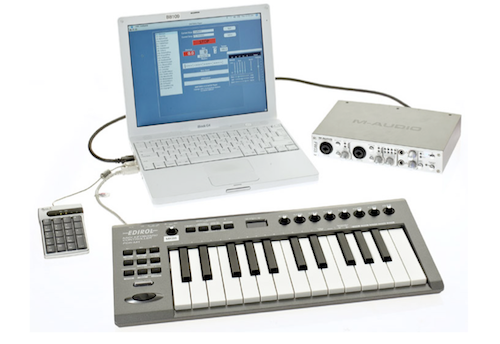
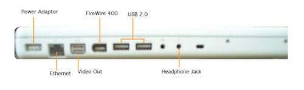
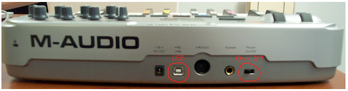
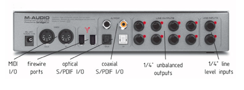
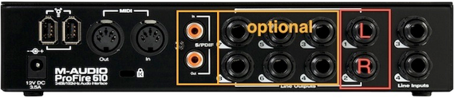
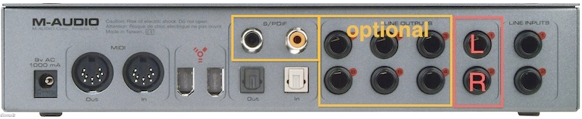
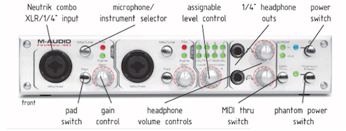
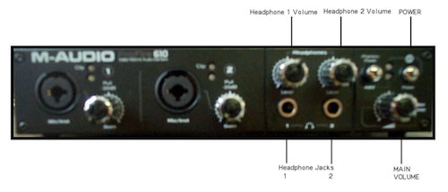
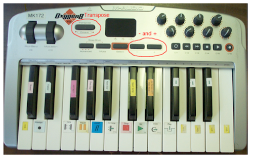

Quick Start
If you haven't done so already, be sure to read these important considerations.
What’s In The Box
Your Sinfonia® system will arrive with the following items:
- Apple Macintosh MacBook (Pre-loaded with Sinfonia® software and your licensed show)
- MIDI keyboard controller
- M-Audio Firewire 410 or Profire 610 audio breakout box
- USB Number Pad
- Power cable for MacBook
- USB cable for MIDI keyboard
- Firewire cable for Firewire 410 or Profire 610
- Documentation
- Sinfonia® score for your licensed show
In the Box |
|  |
MacBook (left side) |
|  |
Assembly
If you haven't done so already, be sure to read these important considerations.
- Connect the square, magnetic end of the power cord into the left back corner of the computer. Plug the other side into a clean dedicated power source. (This power source should not be shared with any other device.)
- Connect the MIDI keyboard to the computer with the USB cable. The flatter connection of the cable connects to either USB port on the left side of the Computer (See Figure 2 - MacBook (left side) above). The other side of the cable connects to the back of MIDI keyboard.
- Connect the USB Number Pad to the other USB port on the left side of the computer.
- Connect the Audio Break-Out Box (FireWire 410 or ProFire 610) to the computer with the Firewire cable. One end of the cable connects to the FireWire 400 port on the left side of the Computer and the other connects to a similar port on the back of the Audio box. (Note: Only connect the Firewire 410 or ProFire 610 while the Computer is off.)
- Connect to your theater’s sound system with two (2) ¼ inch audio cables (not supplied) plugged into the unbalanced outputs on the back of the FireWire 410 or ProFire 610. Sinfonia outputs a stereo mix to line outs 1 and 2 of the breakout box. If you wish to run a different type of mix (such as a mono or multi-channel mix), please see the "Channel Map" section of the manual for information about audio routing to the various output ports.
- Alternatively, for headphone monitoring, you can plug headphones into the headphone port on the front of the FireWire 410 or ProFire 610. This can be useful for practicing in private, though we do not recommend running sound for performances through the headphone port.
M-Audio MIDI Keyboard (back side) |
|  |
Firewire 410 (back side) |
|  |
Note: You will not need the Ethernet, video out or headphone jacks on the Macintosh.
Proper Audio Setup
A few more works on setting up your audio. By default, Sinfonia is set up with a 2-channel stereo mix. In order to get the full sound out of the firewire interface, you need to plug audio patch cables (not provided) into Line Outputs 1 & 2 in the back of the interface. Line Output 1 gives the "left" channel of the stereo mix, and Line Output 2 gives the "right' channel. If you use only Line Output 1, you are missing half the sound!
Please note, if you are then running sound through a mixing console, you will need to pan the channels on the console hard left and hard right to reproduce the stereo mix.
Profire 610

Firewire 410

Powering Up & Shutting Down
If you haven't done so already, be sure to read these important considerations.
Powering Up
- If you received an Oxygen8 MIDI keyboard, make sure the power switch in the back is in the “On” position. If you have received an Oxygen25 MIDI keyboard, make sure the switch is set to the " | " position.
- Make sure the power button on the front of the FireWire 410 is
pressed into the ‘on’ position.
Firewire 410 (front side)
 Note re: Firewire 410: Most of the other Firewire 410 controls are unnecessary for Sinfonia® use and should be left alone. The exceptions are as follows: (1) you might want to adjust the headphone levels with the headphone gain knobs, if you are monitoring with headphones; and (2) the level control knob should be at full volume by default – but if it is accidentally turned down, you will want to adjust the knob to turn it back up. All buttons other than the power button should be left in the ‘out’/unengaged position.
ProFire 610 (front side)
 NOTE: The indicated items on the front of the ProFire 610 are the only items you will need to interact with. You should not turn on the phantom power button (to the left of the POWER button), and you will not need to do anything with the audio inputs on the front left side of the ProFire. (The back of the ProFire 610 should resemble the back of the FireWire 410; see Figure 4 on page 4 for an illustration.)
With the ProFire 610, the audio will normally come out of Headphone Jack 1 only. We recommend turning the MAIN VOLUME of the ProFire all the way to the right for maximum signal (you can always lower the level of the sound at your mixing board or through the headphones if this is too loud for you.)
- Turn on the MacBook by pressing the power button on the top right
corner of the MacBook’s keyboard.
As the Computer boots up, you should see on the FireWire 410 that all the green LEDs on the front panel illuminate in succession and that the power light settles on a steady blue light. (For the ProFire 610, you will see the steady blue light in the top right corner, but not the succession of green LEDs.) You should also notice that the Oxygen8 MIDI keyboard’s LCD screen will flash, and then a number (such as ‘91’) will appear in the LED screen. (Do not be concerned with what number appears in the LED screen; this number does not have any bearing on Sinfonia® playback.)
Note re. Oxygen8 & Oxygen25 MIDI Keyboards: You should not need to use any keys on the Oxygen8/25 keyboards other than the standard piano-type keys. In fact, a few of the non-piano type buttons & knobs can cause trouble and should be avoided. See ‘Oxygen8/25 Notes’ for more information.
- After a minute or two, the Computer will land on a Log-In screen.
Click
the icon next to ‘RMS.’
There are two User ID options presented: (1) Administration, and (2) RMS. You will always use the RMS ID when using Sinfonia® – never Administration.
- Sinfonia® will launch automatically.
Shutting Down
Shutting down is a simple process:
- From the Sinfonia® Player window, click the ‘Quit’ button. You will be returned to the Log-In screen.
- Click the ‘Shut-Down’ button on the Log-In screen. The Computer will go through a series of shut-down procedures and then power itself off. Do not "close" the computer screen until it has completely finished powering off.
Equipment Notes
Oxygen8/25 Notes
Most of the time, you will not need to touch any of the Oxygen8 or Oxygen25 controls other than the piano-type keys. In general, you should leave the other controls alone. But if something is accidentally bumped or changed, it will be helpful to be aware of the following:
Unless there is a conscious effort to change programming, most of the buttons above the piano keys will only temporarily affect the Oxygen8 settings. If you leave it alone for a moment, the LCD will return to its former state and Sinfonia® should perform as normal.
- Transpose Button
- Resetting the Keyboard
- Unplug the USB cable from the back of the Oxygen8/25. The LED display should go completely blank.
- Hold down the – and + buttons on the bottom right side of the LED. While holding both the – and + buttons at the same time, plug the USB cable back in. The LED screen should come back on.
- Once the LED screen is on, you can release the – and + buttons. Please refer to the "Playing" section of the Sinfonia® instruction manual for more information on the specific functions of the MIDI keyboard.
- Controller Knobs
If you accidentally hit the Transpose Button to the left of the of the LCD screen, you will notice the display change in value in positive or negative integer increments. This will change the keyboard transposition either up or down in octave increments. If this happens, the keyboard functionality will be off by whatever transposition is in effect. To restore the original non-transposed keyboard settings, hit the transpose buttons either up or down until you reach the value of zero (0).
Oxygen8 keyboard (top view) |
|  |
If any of the other buttons (such as the navigation buttons below the Controller Knobs) are pressed, it is possible to put the Oxygen8 in a state where it does not properly control Sinfonia®. In this case, the keyboard will need to be reset back to its default state for it play Sinfonia® properly. To reset the Oxygen8 keyboard:
The Controller Knobs labeled C1-8 at the upper right portion of the keyboard send large streams of data when turned. These would likely get in the way of Sinfonia® data and disrupt smooth playback. Therefore, take care that these knobs are not turned during performance.